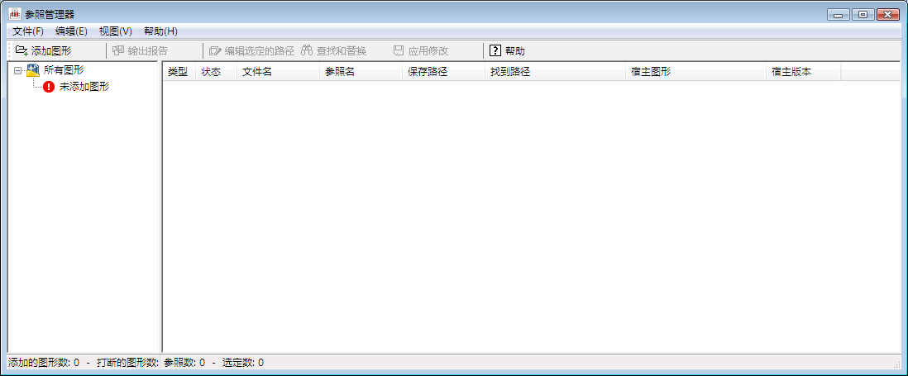

重新定位 AutoCAD 图形文件或其参照的外部文件时，请使用参照管理器修改图形中保存的参照文件路径。
“参照管理器”窗口包括两个窗格。左侧窗格显示选定图形及其参照的外部文件的树状图。

树状图有助于用户在右侧窗格中查找和加载内容，右侧窗格称为“参照”列表。“参照”列表显示参照的列表，用户可以在其中选择和编辑保存的参照路径信息。
要更改已保存的参照路径，请执行以下步骤：
参照管理器当前并非对图形所参照的所有文件都提供支持。不受支持的参照包括与文字样式无关联的文字字体、OLE 链接、超级链接、数据库文件链接、PMP 文件以及 Web 上的 URL 的外部参照。如果参照管理器遇到 URL 的外部参照，它会将参照报告为“未找到”。


 全部展开
全部展开 全部收拢
全部收拢